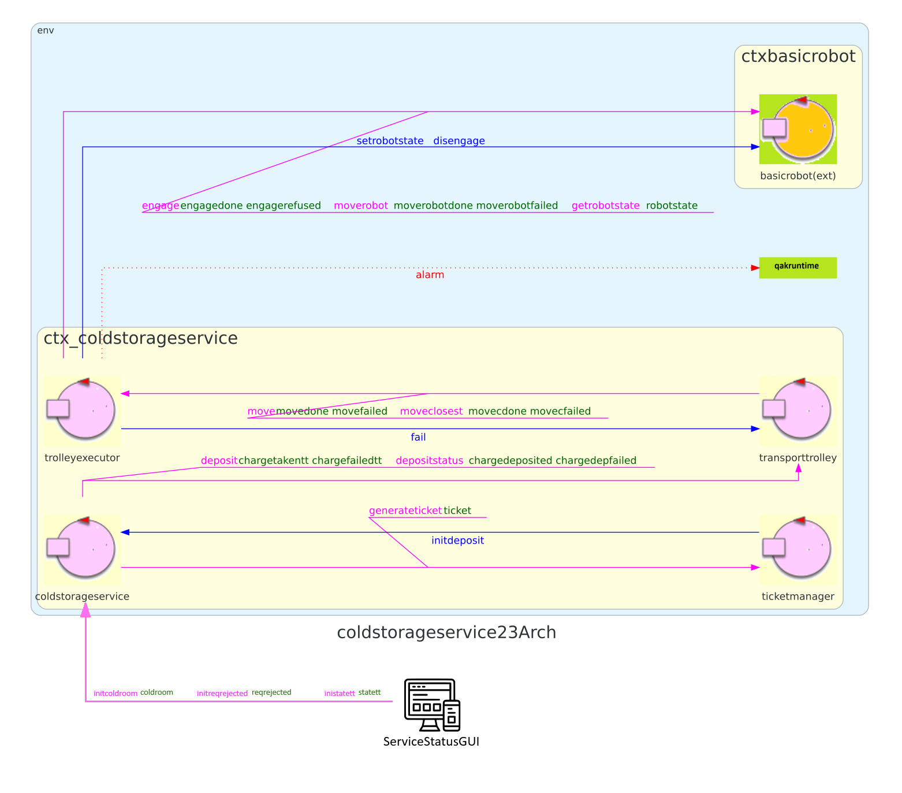

Introduction
In questo Sprint verrà analizzata la ServiceStatusGUI, componente software per permettere ad un utente umano di supervisionare lo stato della ServiceStatusGUI.
Ci poniamo già in un contesto in cui la ServiceStatusGUI sarà un'applicazione web realizzata tramite il framework SpringBoot, sia per uniformare lo stack tecnologico (ServiceAccessGUI, MapConfigurator), sia per diminuizione dei costi.
Requirements
Descrizione requirements a questa pagina
- il peso attuale del materiale immagazzinato nella ColdRoom
- il numero di richieste di deposito rifiutate dall'inizio del servizio
- lo stato corrente del TransportTrolley e la sua posizione nella stanza
Requirement analysis
Viene riportato nel seguente documento la versione del TemaFinale23 analizzata contestualmente a questo Sprint.
Questo componente è alieno al progetto core del sistema (qak), non è per cui necessario, per ora, riportarne il modello architetturale.
Mentre i primi 2 requisiti risultano molto chiari, il terzo viene analizzato di seguito.
Stato corrente del TT e posizione
Dopo il colloqui con il committente, abbiamo chiarito che con stato corrente del TransportTrolley si intende l'informazione che sia:
- fermo
- in movimento
Questo significa fornire all'utente anche una sorta di rappresentazione della stanza per dare un senso alla posizione del robot.
Problem analysis
KEY-POINT: ricordiamo che, come detto in introduzione, la ServiceStatusGUI sarà un'applicazione web in Spring
Di seguito, verranno analizzati i 3 requisiti presenti in Requirements.
Visualizzazione del peso attuale del materiale immagazzinato nella ColdRoom
Questa funzionalità è già stata implementata per la ServiceAccessGUI all'interno di questa sezione dello Sprint2, per cui, vista anche l'uniformità dello stack tecnologico, non ci dilungheremo.
Oltre al concetto di osservabilità (analogo), per quanto riguarda l'inizializzazione verrà utilizzata la stessa request-reply della ServiceAccessGUI, che riportiamo di seguito.
| Mittente | Destinatario | Tipologia interazione/messaggio | Identificatore messaggio | Payload | Descrizione |
|---|---|---|---|---|---|
| ServiceStatusGUI | coldstorageservice | Request | initcoldroom | initcoldroom() | Richiesta del valore attuale della ColdRoom. |
| coldstorageservice | ServiceStatusGUI | Reply | coldroom | coldroom(ACTUAL,TEMP) | Valore di kg nella ColdRoom effettivi e totali (contando anche quelli in coda). |
Visualizzazione del numero di richieste di deposito rifiutate dall'inizio del servizio
Analogamante alla visualizzazione del peso immagazzinato nella ColdRoom, sfruttiamo l'osservabilità degli attori qak ed il protocollo Coap. L'attore coldstorageservice, che gestisce le richieste di deposito, emetterà un event (updateResuource) con il valore aggiornato del numero di richieste rifiutare e la SSG si sottoscriverà come osservatore.
Anche qui, non ci dilungheremo ulteriormente.
COMMITTENTE: valutare l'interesse di fornire, a costo praticamente nullo, anche l'info su quelle rifutate per via di errori nell'inserimento del ticket.
Visualizzazione stato corrente del TT e posizione nella ColdRoom
Anche qui, ci si basa sul concetto di osservabilità discusso appena sopra.
Per entrambi i requisiti (stato e posizione), deleghiamoo l'emissione dell'evento contenente le informazioni al TransportTrolley, ovvero colui che realizza la logica di movimento.
All'interno di questa sezione dello Sprint1 sono presenti tutte le interazioni tra TransportTrolley, TrolleyExecutor e BasicRobot. Riportiamo di seguito solo quelle di interesse.
| Mittente | Destinatario | Tipologia messaggio | Identificatore | Payload | Significato |
|---|---|---|---|---|---|
| transporttrolley | trolleyexecutor | Request | move | move(X, Y) | Il TT comunica al TE le coordinate verso cui effettuare lo spostamento |
| trolleyexecutor | transporttrolley | Reply | movedone | movedone() | Lo spostamento è andato a buon fine |
| trolleyexecutor | transporttrolley | Reply | movefailed | movefailed() | Lo spostamento NON è andato a buon fine |
Abbiamo omesso l'interazione moveclosest per ridondanza e comodità di visualizzazione.
Il TransportTrolley è il solo ad avere in pancia tutte le informazioni necessarie. In particolare, sa se il robot è in movimento o meno grazie all'interazione move/moveclosest: sarà necessario emettere un evento "movimento" alla richiesta move ed un altro evento "fermo", alla risposta movedone/movefailed
Per quanto riguarda la posizione, si può ricavare dalle coordinate che il TT invia al TE per implementare il movimento. Infatti, ricordiamo che il TT ha un mapping landmarks-coordinate che gli permette di conoscere la posizione del robot all'interno della stanza.
Ancora una volta, sarà sufficiente emettere un evento "descrittivo" (HOME, INDOOR, ColdRoom), ogni volta che la posizione del robot cambia. Inoltre, potremo fornire informazioni come "sta andando verso HOME", sapendo appunto le coordinate verso cui lo si sta facendo muovere.
KEY-POINT: in questo modo avremo la posizione puntuale del robot solo quando è fermo. Discutere quindi con il committente questa soluzione.
Posizione del TransportTrolley
Mentre l'informazione sul movimento combacia bene con la moverobot, la stessa cosa non
Architettura logica
Si riporta di seguito il modello di architettura logica, limitato al contesto di interesse della ServiceStatusGUI.
TODO: inserire modello tagliato ATTENZIONE: la ServiceStatusGUI NON è stata generata dal progetto qak, per cui va aggiornata manualmente a fronte di eventuali modifiche.
Test plans
In accordo con il committente, non sono previsti piani di test per questo Sprint.
Project
Deployment
Per il deployment ci si basa sulla sezione all'interno dello Sprint1.
Relativamente alla ServiceStatusGUI, analogamente alla SAG, riportiamo il comando per l'avvio dell'applicazione.
ServiceStatusGUI (progetto Spring)
cd ./projects/unibo.servicestatusGUI
gradlew bootRunRiccardo Barbieri - riccardo.barbieri11@studio.unibo.it

Leonardo Ruberto - leonardo.ruberto@studio.unibo.it